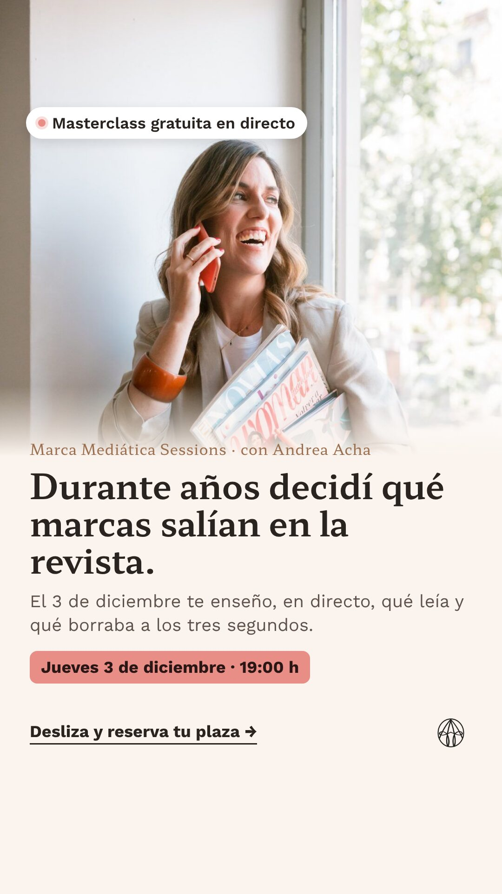
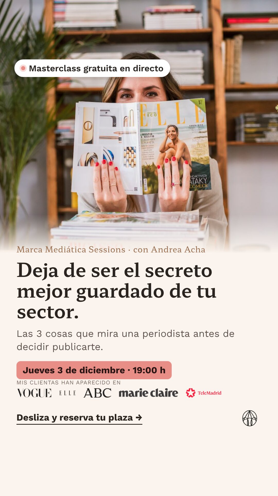
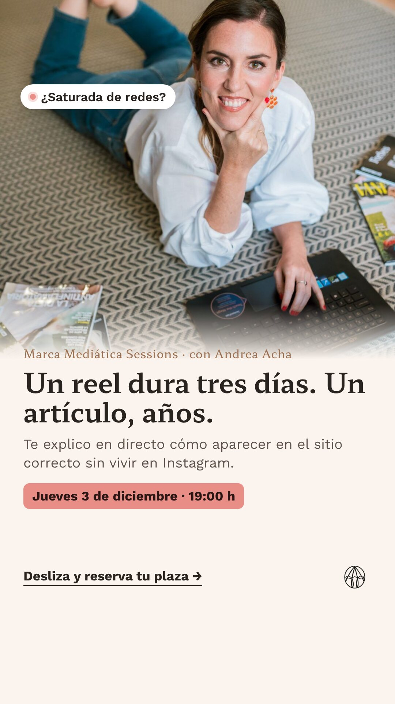
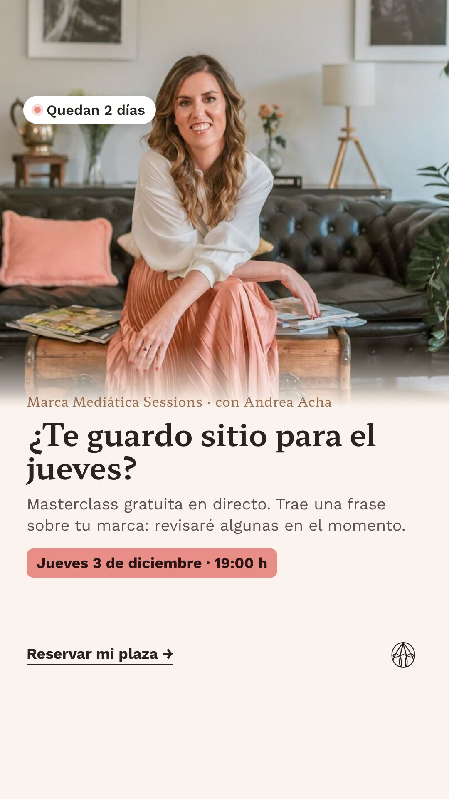
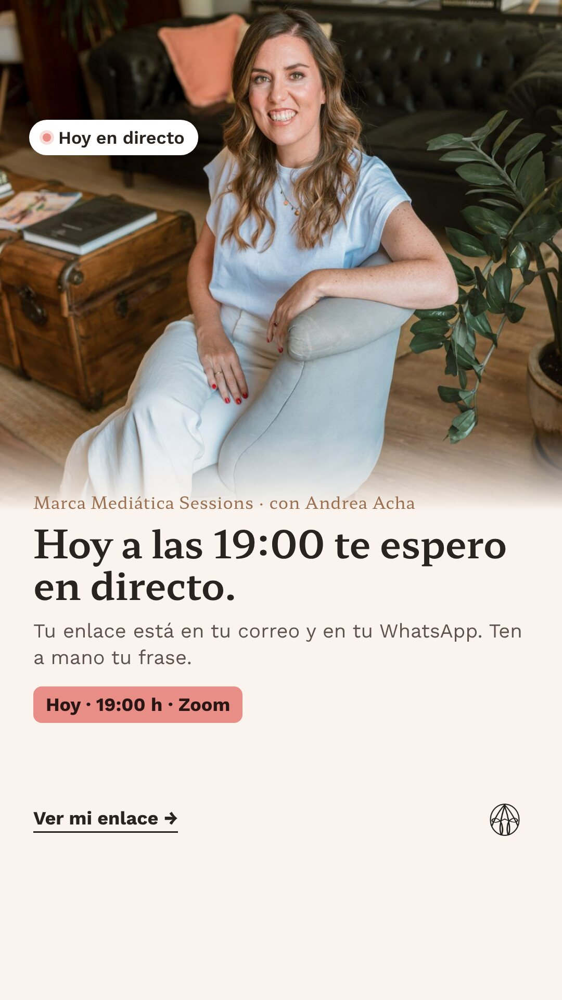
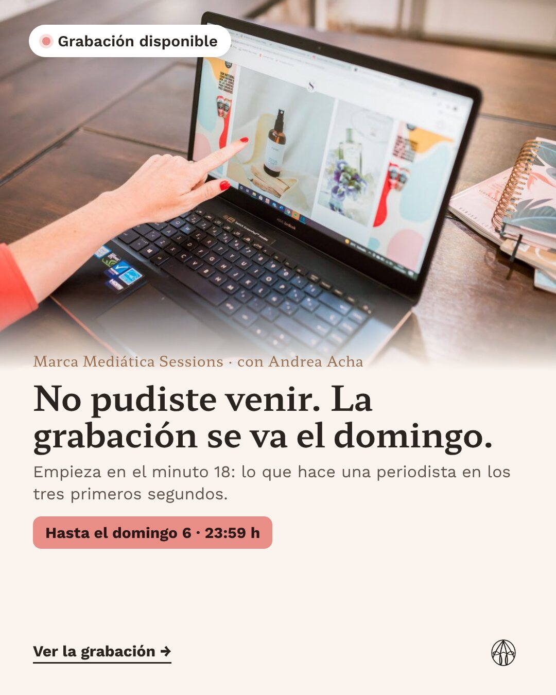

Anuncios de registro al directo: tres ángulos para ver cuál trae gente que asiste
Nueve piezas. Seis de captación (tres ángulos, cada uno en feed 4:5 y en story 9:16) que llevan a la página de registro, y tres de recuerdo para subir la asistencia y el visionado de la grabación. Los tres ángulos salen de tus propios textos, que ya funcionan como contenido. Fotos de tu web; textos para que los corrijas.
Tu autoridad: años decidiendo en una revista qué marcas salían. Pregunta: ¿tu historia de periodista hace que la gente venga en directo?
El dolor de quien ya vende: «fuera de mi comunidad nadie me conoce». Pregunta: ¿el problema atrae a marcas más consolidadas?
La objeción de tus registradas: «no tengo tiempo». Pregunta: ¿trae gente con más interés por la agencia?
A · Al otro lado
Lleva a la página de registro · botón «Registrarte»


Texto principal
Durante años estuve al otro lado: escribiendo en revistas femeninas y decidiendo qué marcas salían. Me llegaban decenas de correos al día. La mayoría empezaban igual: «Hola, soy Marta, tengo una marca de cosmética y me encantaría salir en vuestra revista». Los cerraba a los tres segundos. El jueves 3 de diciembre, en directo y gratis, te enseño qué leía, qué borraba y qué hacía que contestara. 🎙 Marca Mediática Sessions · 19:00 h (Madrid) · por Zoom 👉 Reserva tu plaza. Si vienes en directo, revisaré algunas de vuestras frases en el momento.
Titular
Lo que una periodista lee en 3 segundos
Descripción
Masterclass gratuita · jueves 3 dic · 19:00
Botón
Registrarte
A quién va
Mujeres de 28 a 55 años en España, público abierto (que trabaje el creativo). Más un grupo con quien interactuó con tu Instagram en los últimos 90 días.
B · El secreto mejor guardado
Lleva a la página de registro · botón «Registrarte»


Texto principal
Tu marca funciona. Tienes clientas, te recomiendan… y fuera de tu comunidad casi nadie sabe quién eres. No es falta de esfuerzo ni de seguidores. Es que todavía no te cuentas como una periodista necesita leerlo. En Marca Mediática Sessions te enseño, en directo y gratis, las 3 cosas que mira una periodista antes de decidir publicarte. 📅 Jueves 3 de diciembre · 19:00 h · Zoom Mis clientas han aparecido en Vogue, ELLE, Marie Claire, ABC o Telemadrid.
Titular
Deja de ser el secreto mejor guardado de tu sector
Descripción
Masterclass gratuita en directo · plazas limitadas en Zoom
Botón
Registrarte
A quién va
Emprendedoras con negocio en marcha de belleza, bienestar y estilo de vida: intereses en cosmética natural, nutrición, yoga, moda sostenible y decoración, de 30 a 55 años. Más quien visitó andreaacha.com o cursos.andreaacha.com.
C · Sin vivir en Instagram
Lleva a la página de registro · botón «Registrarte»


Texto principal
Me lo decís mucho: «estoy saturada, no tengo tiempo para sumar otra cosa más». Lo entiendo. Llevas años sosteniendo Instagram como si fuera un trabajo a tiempo completo. La prensa funciona al revés: no te pide estar todos los días. Te pide aparecer en el sitio correcto de vez en cuando, y luego trabaja por ti. Un artículo no caduca en 48 horas. Te lo explico en directo el jueves 3 de diciembre a las 19:00. Gratis, por Zoom, con tiempo para tus preguntas.
Titular
Una aparición en prensa no caduca en 48 horas
Descripción
Marca Mediática Sessions · masterclass gratuita
Botón
Registrarte
A quién va
Emprendedoras de 30 a 55 años con interés en emprendimiento femenino, marketing en Instagram y marca personal. Es el ángulo con más probabilidad de traer interesadas en la agencia: lo medimos.
Recuerdo: más asistencia y más grabación
Presupuesto pequeño y públicos muy concretos. Llegan a quien no abre el correo ni está en WhatsApp.



Cómo lo probamos
| Qué | Cómo |
|---|---|
| Estructura | Una campaña de registro con los tres ángulos (A, B, C) en feed y story, la misma página de registro y el mismo público abierto. Solo cambia el mensaje. Aparte, una campaña pequeña de recuerdo. |
| Presupuesto | Lo decides tú. Como orientación, entre 30 y 50 € al día en registro durante tres semanas y 5-10 € al día en recuerdo. A confirmar con lo que inviertes hoy. |
| Primeros días | No se apaga nada antes de 3-4 días y unas 2.000 impresiones por anuncio. Se mira qué ángulo para el scroll y cuál pasa del clic al registro. |
| Qué gana | No el coste por registro, sino el coste por asistente y el coste por llamada agendada. Mientras llega el directo, la señal temprana es qué anuncio trae registradas que confirman por WhatsApp, entran al grupo y abren la bienvenida. |
| Cuándo se corta | Si un ángulo cuesta más del doble por registro que el mejor después de 4 días, se pausa. Tras el directo se reparte el presupuesto del siguiente lanzamiento según el coste por asistente y por llamada. |
| «Comenta FAN» | Se mantiene: funciona para conversar. El enlace que se envía por mensaje lleva su propia marca, así también se sabe qué publicación acaba en llamada. |
Pendiente antes de publicar
- La fecha real del directo y su nombre (aquí, «Marca Mediática Sessions», que aparece en uno de tus anuncios).
- Tu visto bueno a los textos. Los casos y los nombres de alumnas, solo con su permiso.
- Si quieres, una versión en vídeo de cada ángulo: tú a cámara 20-30 segundos (ya tienes reels que sirven de base).
- Revisar el anuncio activo que habla de «la edición de septiembre que empieza este 24».
Maikel Echevarría · Qualivo · maikel@qualivo.io · +34 647 11 84 91 · qualivo.io
Maqueta de Qualivo para Andrea Acha, no publicada. Fotos y logos de andreaacha.com.